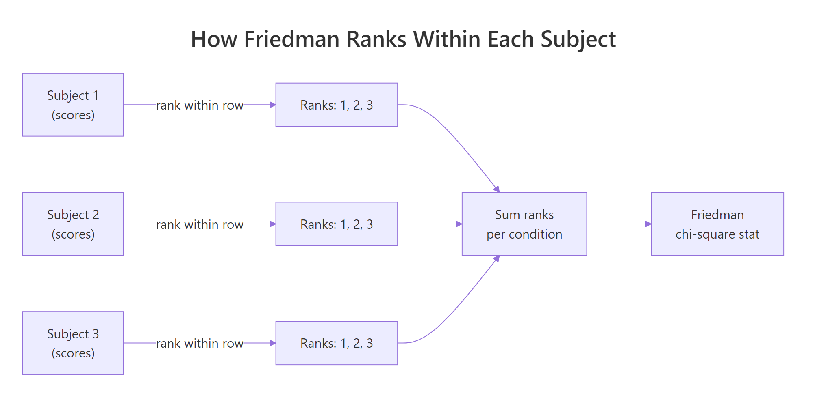
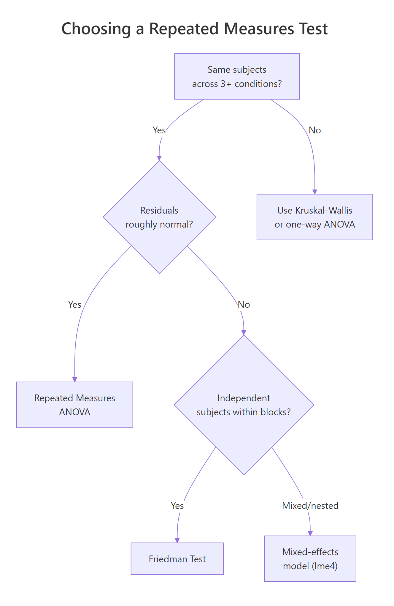
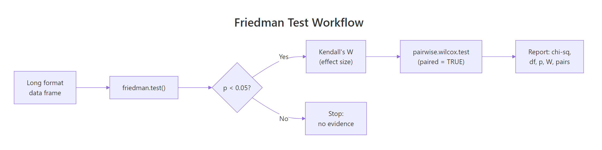

Friedman Test in R: Nonparametric Repeated Measures Analysis
The Friedman test is the rank-based, nonparametric counterpart of repeated measures ANOVA. In R, friedman.test(y ~ condition | subject) checks whether 3 or more measurements taken on the same subjects differ, without requiring normal residuals.
When should you use the Friedman test?
Reach for the Friedman test whenever you have three or more measurements on the same subjects and the residuals from a repeated measures ANOVA are not normal. Think of patients rated on three painkillers, judges scoring four wines, or sensors logging temperatures across five timepoints. As long as one column identifies the subject (the block) and one column identifies the condition, friedman.test() does the rest. Below is a 12-patient sleep-aid trial with placebo, Drug A, and Drug B given to every patient.
The chi-squared statistic is 20.167 on df = 2 (one less than the number of treatments) and the p-value is roughly 4.2e-5. At any usual cutoff you reject the null that the three treatments produce the same sleep distribution. At least one drug differs from the rest, which a post-hoc test will pinpoint later in the post.
Try it: Run friedman.test() on a 6-subject, 3-condition matrix you build from scratch. Confirm the chi-squared statistic is positive and that df = 2.
Click to reveal solution
Explanation: When the input is a matrix, friedman.test() treats each row as a subject and each column as a condition. With 6 subjects and 3 conditions you get df = 2.
How does the Friedman test work?
Knowing what friedman.test() does inside the call helps you read its output and trust the verdict. The recipe is short: rank within each block, sum the ranks per condition, and compare those sums to what chance would produce.

Figure 1: Friedman ranks scores within each subject, then tests whether the per-condition rank sums differ.
The Friedman chi-square statistic captures how unevenly the rank sums spread across conditions.
$$\chi^2_F = \frac{12}{N \cdot K \cdot (K+1)} \sum_{j=1}^{K} R_j^2 - 3 N (K+1)$$
Where:
- $N$ = number of blocks (subjects)
- $K$ = number of conditions (treatments)
- $R_j$ = sum of ranks assigned to condition $j$
Under the null of identical condition distributions, $\chi^2_F$ follows approximately a chi-square reference with $K-1$ degrees of freedom. A large value means at least one rank sum is far from the others.
Let us watch the formula come together on a 3-subject, 3-condition toy matrix.
Subject S3 ranked condition B above condition C, while S1 and S2 went the other way. Rank sums are 3, 7, 8, so condition A is consistently lowest. Plug those into the formula and friedman.test(toy) returns chi-squared = 4.667, df = 2, p-value = 0.0970. With only three subjects you cannot detect more than the strongest signals, which is why Friedman is at its best with double-digit subject counts.
friedman.test() requires at least 3 conditions; for paired before/after data the signed-rank test is the right tool.Try it: Compute the column rank sums for a 4 × 3 matrix where conditions B and C are tied for second in every row. What sums do you expect, and does Friedman return a significant p?
Click to reveal solution
Explanation: When B and C tie in a row, R assigns them the average rank (2 + 3) / 2 = 2.5. Column sums become 4, 10, 10, condition A is the clear loser, and Friedman picks up the difference even at n = 4.
How do you run friedman.test() in R?
friedman.test() accepts two equivalent inputs: a long-format formula or a wide-format matrix. The formula version is friendlier when the data is already tidy; the matrix version is faster when the data is already in subject × condition shape.
The pipe | separates the within-subject factor from the subject identifier. Read it as "sleep hours by treatment, blocked on patient." Both treatment and patient must be factors or coercible to one, and every patient must appear in every treatment level (no missing cells).
The matrix interface needs the data pivoted to wide form, with one row per subject and one column per condition.
Both calls return identical chi-squared, df, and p-value. The matrix form is what most help pages and textbook examples show, and it is convenient when you already have the data pivoted from a spreadsheet.
friedman.test() does not relabel the matrix, so a swapped column quietly relabels your treatments. Always set colnames() and confirm with head() before testing.Try it: Pivot sleep_long to wide and pass it to friedman.test() using base R's reshape() instead of tidyr::pivot_wider(). The chi-squared should still equal 20.167.
Click to reveal solution
Explanation: reshape() renames columns to sleep_hours.Placebo, sleep_hours.Drug A, and sleep_hours.Drug B, but the chi-squared depends only on the values, not the names.
How do you visualize repeated measures data?
Boxplots hide the within-subject linkage that makes Friedman work. A spaghetti plot, where each subject is one connected line across conditions, restores that link. You can read consistency of direction from the slopes of the lines.
Almost every grey line slopes upward from Placebo to Drug A to Drug B, and the purple line of medians follows the same trend. The few crossings are exactly the within-subject reversals that Friedman can absorb without losing its verdict.
Try it: Add a translucent boxplot layer behind the spaghetti so you have both views at once. Use geom_boxplot(alpha = 0.2).
Click to reveal solution
Explanation: Putting geom_boxplot() first puts it behind the lines. The translucent fills mark each treatment's spread, while the lines preserve the within-patient structure.
How do you measure effect size with Kendall's W?
A small p-value tells you something is going on; the effect size tells you how strongly the conditions differ. For Friedman the standard effect size is Kendall's coefficient of concordance, written W. It rescales the chi-squared statistic onto a 0-to-1 scale that represents how much subjects agree on the ranking.
$$W = \frac{\chi^2_F}{N \cdot (K - 1)}$$
Where $N$ is the number of subjects, $K$ is the number of conditions, and $\chi^2_F$ is the Friedman chi-squared. W is 0 when subjects rank conditions completely at random, and 1 when every subject produces the same ranking.
W is 0.84, far above the conventional "large" threshold of 0.30. In plain words, the 12 patients almost unanimously ranked Drug B above Drug A above Placebo. That agreement is what powered the tiny p-value, even with only 12 subjects.
W < 0.10 is small, 0.10 to 0.30 is medium, and >= 0.30 is large. Five or more conditions push the "large" threshold down to 0.25 because rank concordance is harder to achieve with more conditions to order.Try it: Wrap the W formula in a helper ex_kendall_w(ft, N, K) that returns W for any Friedman result. Test it on the original ft.
Click to reveal solution
Explanation: ft$statistic is a named numeric. Stripping the name with as.numeric() keeps the helper's output clean.
Which post-hoc test should follow a significant Friedman?
A significant Friedman tells you some pair of conditions differs but not which pair. The standard follow-up is a paired Wilcoxon signed-rank test for every pair, with a multiple-testing adjustment.
After Benjamini-Hochberg adjustment all three pairs come back significant at any usual cutoff. Drug A beats Placebo, Drug B beats Placebo, and Drug B also beats Drug A. The conclusion mirrors what the spaghetti plot showed: the effect is consistent across patients, in the expected order.
If you want a method that uses the Friedman ranks directly instead of re-ranking each pair, the Conover and Nemenyi tests are the textbook choices. They live in the PMCMRplus package, which is heavier than base R because it pulls in a C++ toolchain. Outside this notebook you would call PMCMRplus::frdAllPairsConoverTest(sleep_mat) for the Conover variant and PMCMRplus::frdAllPairsNemenyiTest(sleep_mat) for the Nemenyi variant.
p.adjust.method = "BH" (less strict, controls FDR) or "bonferroni" (strict, controls FWER).Try it: Re-run pairwise.wilcox.test() on sleep_long with p.adjust.method = "bonferroni". Compare against the BH numbers above. Save the result to ex_pwc_bonf.
Click to reveal solution
Explanation: Bonferroni multiplies each raw p-value by the number of tests (3 here), capped at 1. The conclusions stay the same because the raw p-values were tiny to start with.
What assumptions does the Friedman test require?
Friedman is forgiving but it is not assumption-free. Five conditions need to hold for the chi-square approximation to behave.
- Three or more conditions per subject. With two conditions, use the Wilcoxon signed-rank test instead.
- Same subjects across all conditions. No missing cells. If patient 7 skipped Drug B, drop patient 7 entirely or impute before testing.
- Outcome is at least ordinal. Friedman ranks within rows, so the values must be orderable. Likert scales, reaction times, and continuous scores all qualify; nominal categories do not.
- Subjects (blocks) are independent. The repeated measurements happen within a subject, but different subjects must not influence each other.
- Conditions can be ranked without dominant ties. Friedman handles a few ties through average ranks, but if most rows are flat, the test loses power and the chi-square approximation drifts.

Figure 2: Decision tree: when to choose Friedman over repeated measures ANOVA or a mixed-effects model.
The clearest sign that Friedman is the right tool is failure of the normality assumption that powers RM-ANOVA. Fit the parametric model, look at the residuals, and let Shapiro-Wilk decide.
The residuals look fine here (p > 0.05), so RM-ANOVA would also work. Friedman's value shows when this gate fails: skewed reaction-time data, heavy-tailed cost data, or hard caps from rating scales push residuals away from normal and break the F distribution that RM-ANOVA leans on. In those cases Friedman keeps its calibration.
Try it: Decide which test fits each scenario, then state your reasoning in one sentence.
Click to reveal solution
A: Paired t-test (or Wilcoxon signed-rank if normality also fails). Friedman needs K >= 3.
B: Friedman test. Same subjects, more than two conditions, residuals fail normality.
C: Mixed-effects model (lme4::lmer or its rank-based cousin). Subjects are nested in clinics, so the independence assumption of Friedman breaks down.
Practice Exercises
The exercises below combine ideas from across the post. Each one expects you to write code from scratch and verify against the expected output.
Exercise 1: Full Friedman workflow on a fresh dataset
Build a 10-subject, 3-condition data frame my_df of synthetic exam scores, run friedman.test(), compute Kendall's W, and run BH-adjusted pairwise Wilcoxon. Save the trio to my_ft, my_W, and my_pwc.
Click to reveal solution
Explanation: The pipeline is identical to the sleep-aid example. With set.seed(7) the chi-squared is small enough that you can see how Friedman behaves under noisier signals.
Exercise 2: Build a friedman_report() helper
Write a function friedman_report(y, x, block) that returns a list with chi_sq, df, p, W, and a BH-adjusted pairwise Wilcoxon matrix. Call it on sleep_long.
Click to reveal solution
Explanation: friedman.test() accepts vector arguments via (y, groups, blocks), which lets the helper stay simple. The pairwise matrix uses NA for the upper triangle, the same shape pairwise.wilcox.test returns.
Exercise 3: Decide between Friedman and RM-ANOVA on borderline data
Use set.seed(42) to generate a 20-subject, 3-condition data frame my_borderline with mostly normal residuals plus two outliers. Fit lm(), run Shapiro on the residuals, and recommend Friedman or RM-ANOVA based on the p-value. Save the recommendation to my_pick.
Click to reveal solution
Explanation: The two outliers drag the residuals away from normal, Shapiro returns a small p, and the rule recommends Friedman. Without the outliers, the same code would point you to RM-ANOVA.
Complete Example
The R help page for friedman.test() ships with the Rounding First Base dataset from Hollander and Wolfe (1973): 22 baseball players timed running to first base under three styles of rounding. The pipeline below shows the full reporting workflow you would put in a paper.
The Friedman test gives a p-value of 0.0038, so at least one rounding style differs in expected time. Kendall's W is 0.25 (medium effect for K = 3). Pairwise Wilcoxon then locates the difference: Wide Angle is faster than both Round Out and Narrow Angle, while Round Out and Narrow Angle do not differ. A reporting sentence: "A Friedman test indicated a significant effect of rounding style on running time, chi-squared(2) = 11.14, p = .004, W = 0.25. BH-adjusted pairwise Wilcoxon comparisons showed Wide Angle was faster than both Round Out (p = .021) and Narrow Angle (p = .005), with no difference between the latter two (p = .355)."
Summary
The Friedman test is your first stop whenever the same subjects are measured under three or more conditions and you cannot trust normality. The table below is a quick reference card for the full workflow.

Figure 3: The end-to-end Friedman workflow: test, effect size, post-hoc, report.
| Step | R call | What it gives you | |
|---|---|---|---|
| Run the test | `friedman.test(y ~ x \ | block)` | chi-squared, df, p-value |
| Effect size | chi^2 / (N * (K - 1)) |
Kendall's W in [0, 1] | |
| Visualize | geom_line(aes(group = subj)) |
Spaghetti plot of trajectories | |
| Post-hoc | pairwise.wilcox.test(..., paired = TRUE, p.adjust.method = "BH") |
All-pair p-value matrix | |
| Assumption check | shapiro.test(residuals(lm(...))) |
Switching rule vs RM-ANOVA |
Reach for RM-ANOVA when the residuals look normal, Friedman when they do not, and a mixed-effects model when subjects are nested in higher-level groups. Pair every Friedman with Kendall's W and a multiple-testing-aware post-hoc, and you have a defensible analysis even before you write the report.
References
- R Core Team.
friedman.test()reference documentation. Link - Friedman, M. (1937). The use of ranks to avoid the assumption of normality implicit in the analysis of variance. Journal of the American Statistical Association, 32(200), 675-701. Link
- Hollander, M., Wolfe, D. A., Chicken, E. (2014). Nonparametric Statistical Methods, 3rd Edition. Wiley. Chapter 7.
- Mangiafico, S. (2016). Summary and Analysis of Extension Program Evaluation in R, Friedman Test chapter. Link
- Pohlert, T. (2023). PMCMRplus: Calculate Pairwise Multiple Comparisons of Mean Rank Sums Extended. CRAN. Link
- Conover, W. J. (1999). Practical Nonparametric Statistics, 3rd Edition. Wiley. Sections 5.8 and 5.9.
- Wikipedia, Friedman test. Link
Continue Learning
- Kruskal-Wallis Test in R: k-Sample Nonparametric ANOVA + Post-Hoc covers the Friedman analogue when groups are independent rather than repeated measures on the same subjects.
- Wilcoxon Signed-Rank Test in R: Paired Data Without Normality handles the two-condition special case that backs Friedman's pairwise post-hoc.
- When to Use Nonparametric Tests in R: Decision Guide with Flowchart gives the broader decision tree that places Friedman among its rank-based cousins.